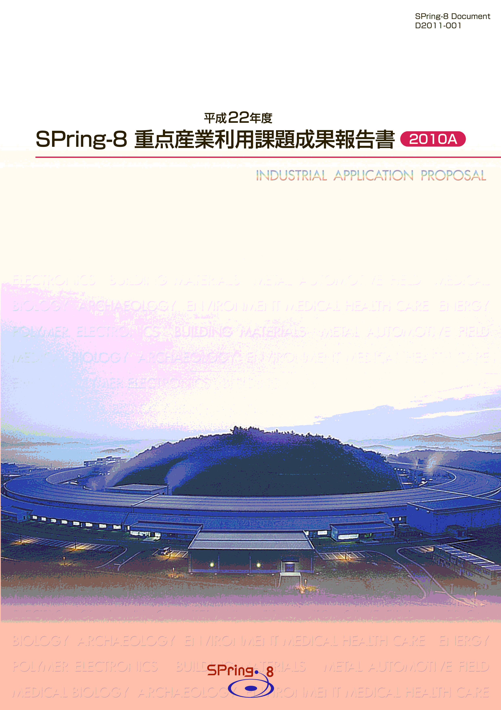
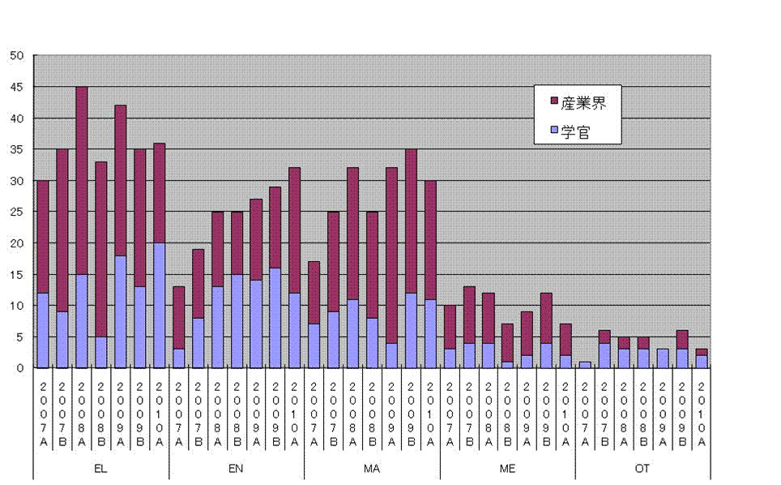
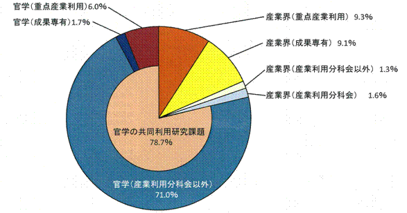
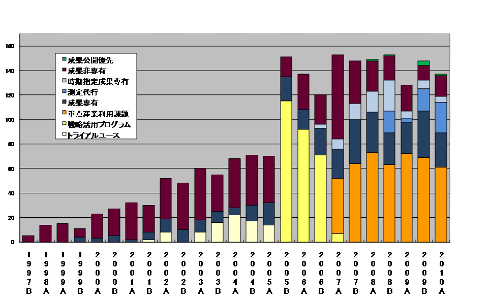
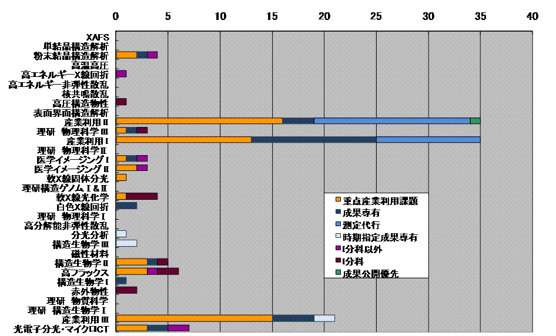
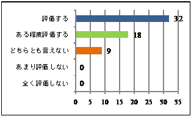
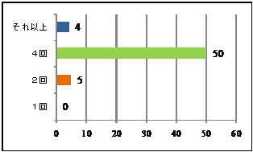
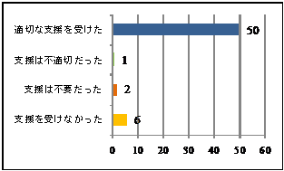
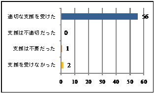

1. はじめに2. 公募の内容
3. 成果公開の考え方
4. 実施の経緯と流れ
5. 結果
6. 民間企業利用への効果
7. 利用者アンケートの結果と今後の課題
8. 課題利用報告書
* 送付を希望される方は、連絡先（氏名、所属、〒住所、E-mail）をご記入の上、 事務局 support@spring8.or.jp までE-mailでご連絡ください。
産業利用の更なる促進を目的に、平成17年度(2005B期)より文部科学省のプログラムとして先端大型研究施設 戦略活用プログラム（戦略活用プログラム）が実施されて支援体制の整備が進み、利用実績も増加すると共に 産業利用推進室の活動も軌道に乗ってきた。平成19年度（2007A期）から、重点産業利用課題は領域指定型の 重点研究課題の一つとして承認され、先に実施された戦略活用プログラムを継承する施策として位置付けて実施 されている。
- 公募の分類
本プログラムで募集する課題は「新規利用者」、「新領域」、「産業基盤共通」と「先端技術開発」の4つに 分類している。
「新規利用者」とは、申請代表者が、これまで、一般課題への応募などを含め、SPring-8を利用した ことのない利用者を指している。但し、事業規模が相当程度大きく事業範囲が多岐に及ぶ企業で、これらの 企業が既に利用している場合には、既に利用している事業分野とは異なる新規分野からの新たなユーザーであれ ば、「新規利用者」として認めている。
「新領域」とは、申請者の利用経験に関係なく、これまでSPring-8で実施されたことがない産業領域、あるい は、近年開発された新手法を用いることによって新たな展開が可能になる産業領域を指している。新領域の例示 を下記に示しているが、これ以外でも新規性が認められる研究領域であれば、新領域の対象になる。
○コンクリート等建築資材⇒三次元内部構造をX線CTによる撮影
○ヘルスケア⇒毛髪や皮膚の構造をX線回折・散乱及び透視画像で解析
○医薬品原薬⇒粉末X線回折による構造解析
○硬X線光電子分光法⇒薄膜材料の内部界面の状態解析
○環境負荷物質微量分析⇒大気・水などの重金属汚染物質の化学状態
○耐腐食構造材⇒金属材料の表層やサビの構造・状態分析
○高密度記録装置⇒DVD、HDD等の新規記録材料の薄膜構造・状態分析
「産業基盤共通」とは、それぞれの産業分野に共通する課題を解決する目的、あるいは産業利用に有効な手法 の共同開発を目的として、複数の企業を含むグループが一体となって取り組むもので、新計測技術の確立、共通 課題のデータベース化等を図る研究を指している。申請代表者が複数の企業を含むグループを取りまとめて、1つ の課題として申請して頂く。ここで言う「複数の企業」とは、それぞれ参加する企業が同等かつ独立に成果を 利用できる関係にあることを想定している。したがって、産学官連携の研究グループによる利用の場合には、学 と官は「複数の企業」としてカウントされない。
「先端技術開発」とは、ユーザーが実施するイノベーション型の技術開発課題で、成果の企業業績への貢献、 あるいは社会還元を目指した研究を指している。
- 公募の回数
BL19B2（産業利用Ⅰ）、BL14B2（産業利用Ⅱ）、BL46XU（産業利用Ⅲ）の3本のビームラインは、2007B期から課題 公募を2回に分けて実施している。これら3本の産業利用ビームラインを除く共用ビームラインのうち、重点産業利 用課題にビームタイムを割り当てた対象ビームラインでは、これまで通り、2010A期の課題公募では1回である。
SPring-8を利用して得られた実験・解析結果及び成果は、以下の利用報告書に取りまとめて提出してもらう。
- 利用報告書Experiment Report（英文または和文）
利用終了日から60日以内にオンライン提出。 - 重点産業利用課題報告書（原則和文）
課題採択後に利用業務部より送付される文書に記載されている締切日までに提出。 なお、提出方法は「電子データ（原則としてMSワード）」を電子メールまたは郵送で所定の宛先に提出。
上記の2010A期の報告書のうち「利用報告書Experiment Report」は2010A期終了後60日目から2週間後 にWeb上で公開される。「重点産業利用課題報告書」は印刷公表とする。ただし、利用者が提出した報告 書について、製品化や特許取得などの理由により公開の延期を希望する場合は、財団法人高輝度光科学 研究センターが適当と認めた場合に限り最大2年間延期することができる（2つの報告書自体は、締切日 までに必ず提出してもらう）。また、公開延期期間満了時には、公開延期を認められた申請時の理由に 対して、結果・成果等をまとめて報告をしてもらう。
- 重点領域の指定
重点産業利用課題が領域指定型の重点研究課題として、平成19年1月26日に重点領域推進委員会で 平成19年度と平成20年度の2年間指定を受けた。さらに平成20年10月2日の第6回選定委員会で平成23 年度までの継続が承認され、重点産業利用課題は領域指定型の重点研究課題（公募）として実施され ている。 - 課題選定
課題の選考は、学識経験者、産業界等の有識者から構成される「利用研究課題審査委員会」 （以下「課題審査委員会」という。）により実施される。課題審査委員会は、「重点産業利用領域」 として領域指定された趣旨に照らして優秀と認められる課題を選定する。
審査は非公開で行われるが、申請課題との利害関係者は当該課題の審査から排除される。また、 各委員は委員として取得した一切の情報を委員の職にある期間だけでなくその職を退いた後も第三者 に漏洩しないこと、情報を善良な管理者の注意義務をもって管理すること等の秘密保持を遵守するこ とが義務付けられている。 - 審査の手順
審査は以下の手順により実施される。- 形式審査
提出された申請書類について、応募の要件を満たしているかについて審査する。 なお、応募の要件を満たしていないものは、以降の審査の対象から除外される場合がある。 - 書類審査
課題審査委員会の下に設置する産業利用分科会により、書類審査を実施する。 - 最終審査
書類審査における評価を踏まえ、課題審査委員会において審査を実施し採択課題を決定する。
- 形式審査
- 審査の観点
審査（形式審査を除く）は、以下の観点に重点を置いて実施される。- 科学技術における先端性を有すること
- 産業利用上の成果創出に資すること
- 課題分類の趣旨に合致すること
- 研究手段としてのSPring-8の必要性
- 実験内容の技術的な実施可能性
- 実験内容の安全性
- 利用者支援
コーディネーター並びに産業利用支援グループが中心となり、課題毎に担当者をおき、 BL担当者の協力の下、全所的に利用者支援を実施した。支援の内容は、重点分野における実験環境の整備、 コーディネーター及びスタッフによる実験企画・準備、実験実施、実験解析に至る技術支援などからなる。 - 利用実験
平成22年4月5日～平成22年7月28日までに実施された利用実験課題である。 - 報告
平成22年度2010A期の重点産業利用課題の成果報告は、平成23年度内に行う。
以下に平成22年度2010A期の重点産業利用課題の応募・採択結果についてまとめる。
- 応募・採択結果
表1. 募集時期及び研究機関別応募・採択結果
＊応募数・採択数には、一般課題に分類される下記の12条課題は除外している。募集時期 機関分類 応募数＊ 採択数＊ 採択率（%） 第1回募集 学官 34 20 58.8 産業界 58 43 74.1 第2回募集 学官 32 18 56.3 産業界 23 16 69.6
第1回：5課題（学官：不採択なし）
第2回：2課題（学官：不採択なし)
- 分類
表2. 募集時期及び研究機関別・領域別採択結果募集時期 領域分類 産業界 学官 産学官合計 第1回募集 産業基盤共通 0 1 1 新規利用者 4 1 5 新領域 14 2 16 先端技術開発 25 16 41 第2回募集 産業基盤共通 0 1 0 新規利用者 4 4 8 新領域 2 3 5 先端技術開発 10 10 20
- 利用報告書の公開日延期
2010A期で実施した課題について利用報告書公開日延期申請が提出された課題の内訳は次の通りである。
○公開日延長許可：12課題
理由内訳（複数回答有り）
a.知的財産権の取得のため：12課題
b.事業への適用のため：2課題（いずれもa.知的財産取得と重複）
c.その他の理由：0課題
○公開日延長不許可：1課題
下記の表3は、公開日延期許可された課題を分野別に分類した結果を示す。
表3. 分野別公開日延期許可課題
分野 課題件数 エレクトロニクス 1 環境・エネルギー 9 素材(金属・高分子等) 2 製薬・生活用品 0 その他 0 合計 12
- 産官学の動向
- 研究機関
本プログラムでは産業界にとって有効な利用手法の開発が産学官連携により 積極的に展開されるとの観点から、民間企業のみならず、大学等の公的部門から の応募も受け入れることにしている。民間企業が実験責任者の採択課題の割合は 2007A期より約60%から70%の間で推移している。2010A期の採択課題に占める民間 企業の割合は60.8%でこれまでにもっとも低かった2008A期とほぼ同じになった。 これは、表１に示すように第2回募集において民間企業の応募が学官からの応募 よりも少なかったことの影響と考えられる。これを反映して、第1回募集よりも 第2回募集の方が採択される民間企業の割合が低く、2010Aの第2回募集ではその 割合が約47 %（第1回は68%）である。これは、大学等のユーザーは一般課題と 同時に行われる第1回募集では、重点産業利用課題以外の制度を利用することに 加えて、課題申請を随時受け付けるBL14B2、BL19B2で実施中の測定代行が民間 企業ユーザーの新たな受け皿になり、より迅速な測定が必要なユーザーはそちら を利用するようになったためと考えている。
- 新規利用者
新規利用者の課題はB期よりもA期が多い傾向があるが、2010A期で採択された 新規利用者の課題は2009B期と同じ13課題であった。この数は2008A期の19課題、 2009A期の20課題と比較してやや少なく、産業分野の利用が"拡大"から"定着"の 流れになりつつあることを示唆するものと考える。一方、放射光利用技術が必要 とされる産業分野、技術分野は年々変化するため新規利用者拡大は今後も必要な 活動テーマである。なお、新規利用者の内訳は民間企業が学官を上回り、産業界 の利用ニーズの発掘が有効に機能していることを示すものであると考える。 - 産業基盤共通
複数の企業を含むグループが一体となって取り組む「産業基盤共通」の課題は、 表2に示す通り2010A期では合計2課題が採択され、いずれの課題も申請代表者が 学官の研究機関に所属している。産業基盤共通に分類される課題は2008B期まで は5-7件が採択されていたが、2009A期は3件、2009B期は4件、2010Aは2件と減少 傾向があきらかになった。これは、研究対象の具体化・細分化がすすみ共通する 研究テーマで複数の企業を含む研究グループを組織することが困難になってきた ことを示すものと考えている。 - 分野別分類
図1は、申請代表者の申告に基づいて分類した分野別採択課題数を示している。 産学官の総計ではエレクトロニクス分野の課題が多く、次いで、環境・エネルギー 分野、素材分野の順である。エレクトロニクス分野は横ばい、もしくは若干減少 傾向である。この分野では学官の課題が増加傾向（特にA期の方がB期よりも多い 傾向があるが、原因は不明）である一方、民間企業の課題数が減少し環境・エネルギー 分野及び素材分野の民間企業の課題数を下回っている。これは、high-kゲート絶縁膜 など主要な開発テーマの研究が一段落したことに加え、大手LSIメーカー間での事業 統合が影響したものと考えている。環境・エネルギーの分野の課題はこれまでと同様 に増加傾向にあるが、今期は特に民間企業課題の増加が目立つ。これは、二次電池、 燃料電池、太陽電池などの新エネルギーデバイス開発が現在の民間企業の主要な開発 テーマになっていることを示すものである。
- 研究機関
図2は2010A期の共同利用研究実施課題（共用ビームラインで実施した課題）において、
民間企業に所属する実験責任者の課題数が全体の21％に達したことを示している。その内訳
は、重点産業利用課題が9.3％、成果専有課題が9.1％である。この2つを合わせて18.4％と
なり、民間企業が共同利用研究課題で実施したもののうち、約88％が成果公開延期制度が
ある重点産業利用課題あるいは成果専有課題の2つの利用制度で実施され、これら2つの利用
制度が旨く使い分けられていることが分かる。この結果は、本制度が民間企業に根付いてき
ていることを示すものである。
図も測定代行を含む成果専有課題と重点産業利用課題の割合が2008B期以降ほぼ一定である
ことを示し、利用制度の使い分けが定着しつつあることが読み取れる。特に、成果専有課題
のうち測定代行の締める割合が増加していることは特筆に値する。図4は、利用技術分野別
(ビームライン別)民間企業実施課題数を応募課題分類を示しているが、産業利用Ⅰ（BL19B2）、
産業利用Ⅱ（BL14B2）、産業利用Ⅲ（BL46XU）の3本のビームラインでは、成果専有課題の
割合が他のビームラインと比較して極端に多いことが分かる。特に、BL14B2では測定代行の
課題数が通常の成果専有課題を上回り、XAFSにおいては測定代行が新たなSPring-8利用の
制度として民間企業に根付きつつあることを示している。一方、成果専有課題や成果公開
優先利用課題の増加によって、重点産業利用課題に配分できるビームタイムが減少傾向に
あるため、実験の効率化による採択率向上を目指した機器整備を行うことが一層必要に
なっていると考えられる。
2010A期に実施した重点産業利用課題の実験責任者に対して2010年9月16日～10月29日
を回答期間としWEBより回答を入力する形式のアンケートを実施した。2010A期を通じて
2課題以上を実施した実験責任者もいるため、アンケートを依頼した人数は89名であり、
59件の回答があった。今回のアンケートの回答率は約66%となり多くの利用者の意見を
反映したものと考えられる。
図5、6は課題募集の時期、頻度についての回答結果である。これらの図が示すように12月
、3月、6月、9月に行っている課題募集期間と年4回募集は概ね評価されているが、"実験実施
前に課題募集が行われるため継続して申請しにくい"との意見もあった。この件は一年課題を
利用すればある程度解決すると考えられるが、現状では一年課題の申請は少なく、一年課題の
制度が産業分野の利用者にあまり認知されていないもと考えている。一年課題も含めて利用
制度の認知促進を更に進める必要がある。
図7、8は利用前及び利用中の職員からの支援に対する評価である。これらの図が示すように、
利用前及び利用中の支援に対しては多くの利用者に満足してもらえていることがうかがえる。
一方で、"事前に電話等を通じての相談や打ち合わせを行ったが、初めての利用だったので思い
違いによる準備不足でマシンタイムを活かしきれなかった"との意見や、"測定後のデータ解析
について更なる支援が欲しい"との意見があった。前者については、研修会の開催頻度の増加、
後者については現在XAFS解析で行っているような講習会開催の頻度増や解析ツールの充実が
有効と考えられる。ビームタイムの事情もあって研修会、講習会の頻度を上げることはすぐ
には難しいが、今後積極的な取り組みが必要と認識している。

図1. 重点産業利用課題における分野別採択課題数

図2. 2010A期 共同利用研究実施課題における民間企業の実験責任者の割合

図3. 民間企業による共同利用研究実施課題の課題分類別推移

図4. 2010A期 利用技術分野別(ビームライン別)民間企業実施課題数

図5. "募集の時期（12月、3月、6月、9月）は適切ですか"への回答

図6. "適切な課題募集の頻度は"への回答

図7. "利用前のSPring-8職員の技術相談等の支援は適切でしたか"への回答

図8. "利用実験時のSPring-8側の技術支援は適切でしたか"への回答
この成果報告書に掲載される課題報告書は、2010A利用期に実施された課題のうち、 利用報告書公開日延期申請許可となったものは除いている。